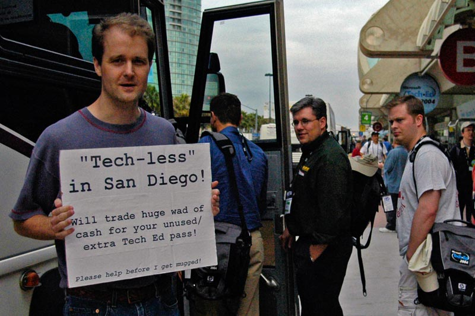

This feature that Scott Swanson describes is BY FAR the most annoying feature in VS.NET 2002 and 2003. When you hit CTRL-ALT-F2 to bring up the Help Index, my immediate next keystroke is ALT-L to guarantee that the focus is set to the "Look For" box. How many times have you brought up the index, started typing and started changing the freaking filter drop-down selection instead? It does a nice job of locking up your computer for a few minutes while it thinks. I'm very happy that it's (finally) being fixed in Whidbey - the filter combo is no longer in the tab order.
Over lunch one day, an attendee who attended the Jesper Johansson's "How to get your Network hacked in 10 easy steps" talk scared the h*** out of me. Some really scary observations:
After an entirely uneventful and on-time flight back to Toronto, I finally have some cycles to reflect on Tech Ed. A reliable network connection also helps :)
I had a chance to catch up with a lot of old friends at Tech Ed. I'd like to wish the good folks at Pluralsight all the best. It was a lot of fun catching up with Fritz, Aaron, Keith and Mike.
I had a chance to meet Scott Hanselman in person. His code generation BOF was one of my highlights from this year's Tech Ed. Scott is seriously funny too - I hope he didn't mind my hijacking his BOF for a few minutes to rant about the abuse of XML.
A few other bloggers came up to me and introduced themselves at the BOF. A shout out to Benjamin Mitchell, and John Bristowe.
Alex Kipman and I got a chance to bond over some good food, drinks and music. It was fun meeting some of the other folks who work with Alex - maybe once he starts blogging he can drag Marie, Justin and Scott into the fold as well.
Update: Josh Ledgard points out in my comments that Scott Swanson already has a blog. It's amazing the power of context since I'm sure there's lots of guys named Scott that work at MS :)
It was fun to finally meet Richard Ersek, a PM on the IIS team who I worked closely with to put together our pre-conference tutorial. The IIS and ASP.NET teams are finally in the same org now at MS, so folks in the ASP.NET community will be hearing a lot more from Richard in the future.
A really big surprise this year was running into Mark Miller, the evil genius behind CodeRush. I see that Keith I Hate Software that requires admin privileges Brown has discovered why Mark needs to stop writing software as a local admin. Mark and I are old friends from our Borland Conference days - it's good to see that Mark is as high-energy as ever.
I see that my comments about the XML "angle-bracket tax" has made its rounds around various blogs. XML should never be maintained by humans. It's a communications medium a'la Pat Helland's XML as cardboard analogy in his most excellent Metropolis analogy.
Don't be like this guy, who showed up at a sold-out show. Make sure that you register early for Tech Ed 2005!

MSBuild Program Manager extraordinaire, Alex Kipman has sort-of started a blog. While the blog is there Alex hasn't actually posted anything yet. So, this pointer is my attempt to enlist public peer pressure to get Alex to start posting :)
If you're at Tech Ed, make sure that you drop by Alex's session: Visual Studio 2005: Managing the Enterprise Build Process with MSBuild on Friday at 1pm in room 31ABC. If Alex finishes the demos that he was building in his hotel room earlier this week, you should all be in for a real treat!
Earlier this week, I had a fun time hanging out with the Microsoft.com operations folks who are led by Jeff Stucky and Casey Jacobs. We presented our Migrating to IIS 6 pre-conference tutorial together on Sunday, and had a some time to bond the night before over some margaritas at Casa de Bandini. Ours was a tag-team presentation. I presented the architecture, features, and administrative tasks while Jeff and Casey explained how they use IIS 6 in a large production environment.
Large production environment is, um, an understatement. Here's some statistics about Microsoft.com:
When Windows Update V5 is turned on, the team is expecting to see 100 million users / day! Windows Update leans heavily on content caching networks such as Akamai and Savvis. These networks ensures that your download comes from the closest (in bandwidth terms) available server.
The DataGrid Girl and I have just completed our hostile takeover of ObjectSharp this week. While some initial resistence was encountered, it ultimately proved to be futile.
Together with Barry, Dave, and Bruce we are committed to creating the leading software education and consulting firm in the Greater Toronto Area. Watch out!
Earlier this week, I told the folks at Wintellect that I was leaving the company. This was really hard, especially my conversation with Jeff Prosise on Sunday night. I couldn't really bring myself to tell Jeff in absolute terms that I had to leave - even though I knew in my heart that it was the right thing to do.
I've been leading a nomadic lifestyle for the past 7 years, and now that I have a new family it's getting harder and harder for me to get on a plane these days. I've been in discussions for some time with a local company here in Toronto about building a new company (more on this later). After talking things over with Carolyn, I realized that being local would be the best thing for our family.
So, while moving on was a bittersweet event for me this week, it was a step that I knew that I had to take. Onward.
I'm off to Tech Ed today. I'll be giving my pre-conference tutorial on Migrating to IIS 6.0 on Sunday, and I'll be free for the rest of the week.
I will have some interesting announcements to make from down there, but I don't believe in cryptic countdowns :)
BTW comments are disabled on this blog until further notice. The amount of automated comment spam that I'm getting is simply ridiculous. If you want to reach me - all you have to do is send an email to jlam @ iunknown.com (and make it past my SpamBayes Bayesian filter).
I'm loving Jonathon de Halleux's blog. He's the author of MbUnit, which contains some very interesting ideas about unit testing in general. He's got a very cool visualization library as well, QuickGraph, which he has used to generate execution graphs using Lutz Roeder's ILReader.
Wow.
One thing that I would like to enforce in my unit tests are constraints. Examples of constraints are things like read-only properties and sealed classes. If a developer comes along and removes one of those constraints by making the property read-write, or by unsealing the class, those changes are not detectable by simply recompiling the code.
One way to enforce constraints is to write unit tests that assert their existence. To help folks out, I've written the beginnings of a utility class that can be used with NUnit tests. Here's the source code for that class for folks who are interested. Feedback about these ideas would be greatly appreciated.
Public Class AssertEx : Inherits Assertion
Public Shared Sub AssertReadOnlyProperty(ByVal t As Type, ByVal propertyName As String)
Dim pi As PropertyInfo = t.GetProperty(propertyName)
Assert(String.Format("Read-only property {0} in class {1} cannot be read from", propertyName, t.FullName), pi.CanRead)
Assert(String.Format("Read-only property {0} in class {1} can be written to", propertyName, t.FullName), Not pi.CanWrite)
End Sub
Public Shared Sub AssertWriteOnlyProperty(ByVal t As Type, ByVal propertyName As String)
Dim pi As PropertyInfo = t.GetProperty(propertyName)
Assert(String.Format("Write-only property {0} in class {1} can be read from", propertyName, t.FullName), Not pi.CanRead)
Assert(String.Format("Write-only property {0} in class {1} cannot be written to", propertyName, t.FullName), pi.CanWrite)
End Sub
' TODO: Implement a visibility property assert - must be internal for example. need to use GetAccessors()
' and assert visibility based on property get/set method visibility
Public Shared Sub AssertNotInheritableClass(ByVal t As Type)
Assert(String.Format("Class {0} cannot be derived from", t.FullName), t.IsSealed)
End Sub
Public Shared Sub AssertNonSerializable(ByVal t As Type)
Assert(String.Format("Class {0} cannot be serializable", t.FullName), Not t.IsSerializable)
End Sub
' TODO: Assert that a class must be abstract
Public Shared Sub AssertNotCreatable(ByVal t As Type)
Dim cis() As ConstructorInfo = t.GetConstructors()
Dim ci As ConstructorInfo
For Each ci In cis
Assert(String.Format("Non-private constructor found in a class {0} that must not be creatable", t.FullName), ci.IsPrivate)
Next
End Sub
End Class